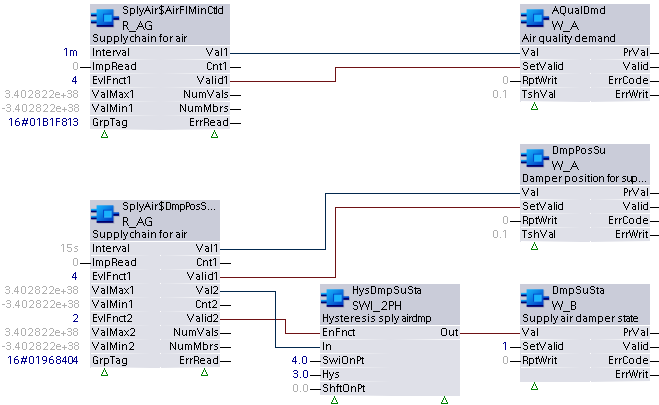

R_AG：读取模拟组
R_AG 绑定到组管理器对象，该对象控制从特定组数据标签的多个数据点连续收集组数据（当前值/状态标志对）。此外，组管理器对象会触发配置的评估函数来计算结果值。 R_AG 以预先配置的时间间隔定期读取评估结果。读取也可以从外部源触发。
R_AG 可配置为根据可选评估函数提供多个（最多五个）评估结果值。必须至少配置一个评估函数。
分组基础设施需要专有对象：一个组管理者对象和一个或多个组成员对象。各个成员数据点通过组成员对象进行分组和引用，并且收集数据并将其从组成员对象传递到组管理器对象。
Compatible data points:
- Analog input [AI]
- Analog output [AO]
- Analog calculated value [ACalcVal]
- Analog configuration value [ACnfVal]
- Analog process value [APrcVal]
参考data point objects有关 BACnet 数据点的详细说明。
Required properties of grouped data points:
- Present value
- State flag
Pin description (inputs)
BaObjRef | |
|---|---|
BA-Object reference 结构 [BaObjRef] 定义 XFB 和 BACnet 对象之间的绑定连接。绑定会自动发生。 手动配置尝试是不必要的，并且可能会导致系统错误。 | |
DeviceId | 设备标识符 双字（默认值：16#3FFFFF） [DeviceId] 在单个标识符中包含对象类型和对象实例。 它用于识别设备对象：本地或远程。本地设备对象也可以通过值 16#3FFFFF 来标识。 |
ObjectId | 对象标识符 双字（默认值：16#3FFFFF） [ObjectId] 在单个标识符中包含对象类型和对象实例。 它用于识别设备内的对象。 |
ItemId | 物品标识符 整数（默认值：-1） [ItemId] 表示功能视图节点对象中的项目索引，它引用 BACnet 对象。 [ObjectId] 和 [ItemId] 一起定义对 BACnet 对象的间接访问引用。 值-1表示使用直接绑定。 |
GrpTag |
|---|
Group data tag 双字（默认值：0） [GrpTag] 定义由 XFB 收集和评估的特定组数据（当前值、状态标志）。 系统提供预定义的标签以及用户可定义的标签。 [GrpTag] 通常由应用程序开发人员在 CFC 中设置，并且在运行时不得更改。必须将其设置为与 XFB 的数据类型匹配的标记。 |
间隔 |
|---|
Read interval TIME（默认值：T#0D_0H_0M_15S_0MS） 可参数化的轮询时间，指定读取计算结果的频率。 值为 0 将禁用计时器。在这种情况下，可以使用 [ImpRead] 从外部源触发评估结果的读取。 如果Interval引脚设置了值-1s，则评估结果的读取由FW触发。当评估结果新更新时，FW 设置读取触发。 （如果“LastUpdated”评估函数被参数化，则Interval应设置为-1s。） |
ImpRead |
|---|
Impulse for read 布尔值（默认值：False） 一个可链接的引脚，允许外部源提供数字脉冲以启动读取操作。 由于[ImpRead]可以连线，因此可以同步多个XFBs的读取操作以收集在单个图表中。 Note |
EvlFnct1...5 | |
|---|---|
Evaluation function 1 整数（默认值：32767） [EvlFnct1] 确定对来自共享公共 [GrpTag] 的所收集组数据的有效当前值执行的操作类型。 [EvlFnct1] 属于五个输入集之一，每个输入集包含 [EvlFnctX]、[ValMinX]、[ValMaxX] 和 [ValNumX]。它通常由应用工程师在 CFC 中设置，并且不得在运行时更改。 如果未配置，[EvlFnct1] 默认设置为 MaxInt (32767)。在这种情况下，评估功能被禁用并且 [Valid1] 为 0 (False)。 [EvlFnct2]...[EvlFnct5] 功能与 [EvlFnct1] 相同。 | |
1：总和 | 计算总和。这可以在完整的数据样本上完成，也可以针对给定范围 [ValMin1] 到 [ValMax1] 内的值完成。 |
2：平均 | 计算平均值。这可以在完整的数据样本上完成，也可以针对给定范围 [ValMin1] 到 [ValMax1] 内的值完成。 |
3：最小值 | 选择最小值。这可以在完整的数据样本上完成，也可以针对给定范围 [ValMin1] 到 [ValMax1] 内的值完成。 |
4：最大 | 选择最大的值。这可以在完整的数据样本上完成，也可以针对给定范围 [ValMin1] 到 [ValMax1] 内的值完成。 |
5: CountOfVal | [ValMin1] 到 [ValMax1] 范围内的有效当前值的数量。结果设置到输出引脚 [Cnt]。 |
8：平均最小值 | 来自共享公共 [GrpTag] 的所收集组数据的可选数量 [ValNum1] 的最低有效当前值的平均值。这可以在完整的数据样本上完成，也可以针对给定范围 [ValMin1] 到 [ValMax1] 或 [ValNum] 内的值完成。 |
9：平均最大值 | 来自共享公共 [GrpTag] 的所收集组数据的可选数量 [ValNum1] 的最高有效当前值的平均值。这可以在完整的数据样本上完成，也可以针对给定范围 [ValMin1] 到 [ValMax1] 或 [ValNum1] 内的值完成。 |
10：最后更新 | 在所有有效当前值中搜索特定组的给定组数据标签的最后更新值。这可以在完整的数据样本上完成，也可以针对给定范围 [ValMin1] 到 [ValMax1] 内的值完成。 |
ValNum1...5 |
|---|
Number of values 1 整数（默认值：4） 与评估函数引脚 [EvlFnct1] 的选项 8 和 9（AVERAGEMIN 和 AVERAGEMAX）结合使用的可参数化参数。 [ValNum1] 指定要在 [ValMin1]...[ValMax1] 范围内评估的值的数量。 [ValNum1] 属于五个输入集之一，每个输入集包含 [EvlFnctX]、[ValMinX]、[ValMaxX] 和 [ValNumX]。
Note [ValNum2]...[ValNum5] 功能与 [ValNum1] 相同。 |
ValMin1...5 |
|---|
Minimum value 1 实数（默认值：MinReal） 评估函数的可选参数化参数，为共享公共 [GrpTag] 的收集组数据值设置下限。 [ValMin1] 属于五个输入集之一，每个输入集包含 [EvlFnctX]、[ValMinX]、[ValMaxX] 和 [ValNumX]。
[ValMin2]...[ValMin5] 功能与 [ValMin1] 相同。 |
ValMax1...5 |
|---|
Value input 1 实数（默认值：MaxReal） 评估函数的可选参数化参数，为共享公共 [GrpTag] 的收集的组数据值设置上限。 [ValMax1] 属于五个输入集之一，每个输入集包含 [EvlFnctX]、[ValMinX]、[ValMaxX] 和 [ValNumX]。
[ValMax2]...[ValMax5] 功能与 [ValMax1] 相同。 |
Pin description (outputs)
值1...5 |
|---|
Value 1 实数（默认值：0.0） 基于[EvlFnct1]中选择的评估函数评估的结果值。 [Val1] 是从给定组数据标签的整个收集的组数据集中获取的处理结果，或者从基于可选输入参数 [ValMin1] 和 [ValMax1] 的指定范围获取的处理结果。 [Val1] 属于五个输出集之一，每个输出集包含 [ValX]、[ValidX] 和 [CntX]。 [Val1] 将交付：
[Val2]...[Val5] 功能与 [Val1] 相同。 |
有效1...5 | |
|---|---|
Valid 1 布尔值（默认值：False） 根据[EvlFnct1]的选择，[Valid1]指示[Val1]或[Cnt1]是否可靠。 [Valid1] 属于五个输出集之一，每个输出集包含 [ValX]、[ValidX] 和 [CntX]。 [Valid2]...[Valid5] 功能与 [Valid1] 相同。 | |
1（正确） | 如果给定 [GrpTag] 的组数据中至少有一个当前值有效（并且如果可选配置，则在 [ValMin1] 到 [ValMax1] 范围内），则 [Val1] / [Cnt1] 是可靠的。 |
0（假） | 如果给定 [GrpTag] 的组数据中的当前值均无效（或在 [ValMin1] 到 [ValMax1] 范围内（如果可选配置）），则 [Val1] / [Cnt1] 不可靠。 |
碳纳米管1...5 |
|---|
Count 1 整数（默认值：0） 基于 [EvlFnct1] 中选择的 CountOfVal 评估函数评估的结果值。 [Cnt1] 属于五个输出集之一，每个输出集包含 [ValX]、[ValidX] 和 [CntX]。 [Cnt1] 将交付：
[Cnt2]...[Cnt5] 功能与 [Cnt1] 相同。 |
UpdInd1...5 |
|---|
Update indication 布尔值（默认值：False） [UpdInd]表示评估中考虑的至少一个当前值被更新为新的或相同的值。仅当更新值在参数化的 ValMin/ValMax 范围限制内时，UpdInd 才会设置为 True。 [UpdInd] 使用更新计数属性（如果存在）。这使得在新值与先前值相同的情况下可以将值识别为已更新。对于没有更新计数的对象，[UpdInd] 切换当前值的更改。 [UpdInd] 仅当 Valid 为 true 时才会设置为 true。 Note |
NumVals |
|---|
Number of valid values 整数（默认值：0） 为特定 [GrpTag] 收集的有效现值样本的数量。 |
NumMbrs |
|---|
Number of aggregated members 整数（默认值：0） 已为特定[GrpTag]收集的现值样本的数量，通常等于由特定组的组管理器对象寻址的组成员对象的数量。 |
ErrRead | |
|---|---|
Error while reading 整数（默认值：20） 最后一次 XFB 读取尝试的状态。 如果无法评估有效的 Val，[ErrRead] 指示在给定 [GrpTag] 收集的数据上检测到的第一个错误。 | |
= 0 | 没有错误。 |
> 0 | 错误，请参阅XFB error codes. |
Use case examples
NOTICE

Note
图形反映了 XFB 实现的示例；有关 CFC 的当前示例，请参阅 ABT。
R_AG:示例取自中央供应功能 AFN 和 CHT{SplyAir01}。由于图形大小的限制，功能块可能会丢失或显示得比典型的更紧密地分组。
第一个示例旨在读取一组成员对象并从每个对象收集供应流量最小命令（使用指定的组标签）。然后，该示例评估并提供最大命令（评估函数4：Max）来设置空气质量需求。由于输入的范围与默认值相同，因此最大评估不受限制。如果一个或多个成员对象有效，XFB 的输出引脚将被设置为有效并用于启用空气质量需求 XFB。
在第二个示例中，对一组成员对象执行两次评估。第一个输入集的评估会评估成员对象供应风门位置的最大值，并将该值设置为 BACnet 对象作为送风风门位置。第二个评估（2 – 平均值）与切换语句一起使用，如果有效位置的平均值大于 4，则将输出设置为 true；如果平均值低于 3，则返回到 false。此评估不限于受限范围，因为输入集 2 的最大和最小值均未从其默认值更改。
